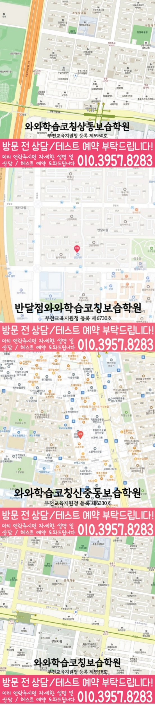

단어·문장 해석 흐름, 문법 적용, 독해 유형 약점을 먼저 확인하고 학생에게 맞는 학습 순서를 설계합니다.



LOCAL ACADEMY GUIDE
부천시 상동 와와학습코칭센터 고1 영어·수학 학습 안내
부천시 상동에서 고1 영어학원을 찾는 학생을 위해, 와와학습코칭센터 상동점은 영어·수학 학습을 기본기 점검부터 성적 향상 전략까지 한 흐름으로 안내합니다. 또한 국어·영수(영어/수학)까지 함께 점검해 과목 간 약점을 연결하고, 학생별 학습 속도에 맞춘 코칭으로 꾸준히 성취가 쌓이도록 수업과 피드백을 진행합니다.
상동 고1 수업의 핵심 포인트
개념 이해–문제 유형–오답 원인을 나눠 관리해 같은 실수가 반복되지 않도록 학습을 재정비합니다.
영어는 지문 독해와 서술형 대비, 수학은 단원별 약점 보완까지 한 주 단위로 점검해 실력 상승을 만듭니다.
선생님 특징
어디에서 막히는지 질문과 풀이 흐름을 통해 진단하고, 핵심 개념을 다시 연결해 스스로 풀 수 있게 지도합니다.
틀린 이유를 유형화해 “다음에는 어떻게 풀지”까지 정리합니다. 결과만 보지 않고 재발을 막습니다.
숙제·복습·서술형 대비 루틴을 점검해 수업 시간이 끝난 뒤에도 실력이 유지되도록 관리합니다.
수업 진행방식
1. 현재 수준 확인
고1 학년 진도, 최근 학교 시험/모의 형태, 자주 틀리는 유형을 바탕으로 취약 단원과 핵심 약점을 정리합니다.
2. 개념 정리와 유형 학습
바로 문제풀이로 들어가기보다 영어는 문법·해석·독해 흐름을, 수학은 개념과 유형을 단계적으로 학습합니다.
3. 오답 관리와 학습 피드백
오답 노트를 활용해 틀린 이유를 분류하고, 다음 학습에서 필요한 보완 포인트를 구체적으로 제시합니다.
4. 국어·영수 연계 점검(필요 시)
영어·수학에 필요한 독해/문해력과 문제 접근 습관을 함께 확인해 국어 기반 실력까지 안정화합니다.
학년/과목별 학습 전략
고1 영어
- 문법을 ‘규칙 암기’가 아니라 문장 속 적용으로 연결해 해석 정확도를 올립니다.
- 독해는 지문 흐름(주제-근거-추론)을 잡고, 학교 시험 서술/유형에 맞춰 반복 연습합니다.
- 어휘·문장 구조 학습을 꾸준히 관리해 긴 지문도 빠르게 읽는 습관을 만듭니다.
고1 수학
- 개념 이해 후 유형을 단계화해, 문제를 ‘푸는 방법’을 체계적으로 익힙니다.
- 오답 원인을 계산/개념/조건 누락 등으로 나눠 재발을 방지합니다.
- 시험 대비 실전 문제로 속도와 정확도를 함께 끌어올립니다.
영수(영어·수학) 균형 전략
- 두 과목의 약점을 동시에 점검해 학습 시간을 효율적으로 배분합니다.
- 성적이 흔들리는 단원/유형을 우선순위로 설정해 집중 보완합니다.
- 주간 학습 계획과 피드백을 통해 계획 대비 결과를 관리합니다.
시험 대비(내신형)
- 학교 시험 범위와 출제 경향을 반영해 복습-적중 유형 학습 순서를 조정합니다.
- 실수 유형(조건, 단위, 독해 근거)을 우선 점검하고, 서술형 대비도 함께 진행합니다.
- 시험 직전에는 오답 중심으로 정리해 점수로 연결되게 합니다.
부천시 상동 와와학습코칭센터 상동점은 고1 학생의 현재 상태를 기준으로 영어·수학(영수) 학습 방향을 정리하고, 상담을 통해 내신/유형에 맞춘 맞춤 학습 플랜을 안내드립니다. 상동 고1 영어학원, 부천 고등 내신 대비가 필요하다면 와와와 함께 시작해보세요.
센터 위치 안내
주소
경기 부천시 원미구 송내대로265번길 67 월드컵타운 305호 와와학습코칭센터
오시는 길
~ 와와학습코칭센터 상동점 위치는 (경기 부천시 원미구 송내대로265번길 67 월드컵타운 305호 와와학습코칭센터)입니다. 진달래마을 정문 앞 청담 어학원 옆건물
주요 타깃학교(이외 학교도 수업 가능)
초등 타깃학교
석천초 상인초
중등 타깃학교
석천중 상동중 상일중 부인중
고등 타깃학교
상동고 상일고 상원고 중흥고 중원고
과목별 수강 가능 학년
국어
초5
초6
중1
중2
중3
고1
고2
영어
초4
초5
초6
중1
중2
중3
고1
고2
수학
초5
초6
중1
중2
중3
고1
고2
과학
수강 가능 학년 정보 준비중
사회
수강 가능 학년 정보 준비중
학원 등록 정보
수업료는 어떻게 되나요? ✨
A - 서울 (1회 90-100분 수업기준)
| 횟수 | 초등 | 중등 | 고등 |
|---|---|---|---|
| 주 3회 | 249,000 | 266,000 | 299,000 |
| 주 4회 | 319,000 | 341,000 | 384,000 |
| 주 5회 | 389,000 | 416,000 | 469,000 |
B - 서울 외 지점 (1회 90-100분 수업기준)
| 횟수 | 초등 | 중등 | 고등 |
|---|---|---|---|
| 주 3회 | 219,000 | 236,000 | 269,000 |
| 주 4회 | 279,000 | 301,000 | 344,000 |
| 주 5회 | 339,000 | 366,000 | 419,000 |
* 수업료는 지역 및 횟수에 따라 일부 차이가 있을 수 있습니다.
고1 영어 상담부터 오답관리까지 이어지는 흐름
고1 영어는 문법, 독해, 어휘, 학교별 내신 지문 관리가 함께 필요합니다. 상담에서는 현재 점수보다 어떤 부분에서 시간이 오래 걸리고 반복 실수가 생기는지 먼저 확인합니다.
현재 수준 확인
학교 진도, 최근 영어 시험 결과, 어려운 문법 단원, 독해 속도와 어휘 암기 습관을 확인합니다.
문법·독해 진단
문장 구조 이해, 구문 해석, 지문 근거 찾기, 선택지 판단 과정을 나누어 약점을 진단합니다.
플래너 실행 점검
어휘 암기, 지문 복습, 문법 적용 문제, 오답 재풀이를 주간 계획으로 나누고 실행 여부를 확인합니다.
오답 원인 분석
틀린 문제를 어휘 부족, 해석 오류, 문법 혼동, 근거 누락으로 분류해 다음 수업과 복습에 연결합니다.
HIGH SCHOOL ENGLISH FAQ
고1 영어학원 FAQ
Q고1 영어는 문법부터 해야 하나요, 독해부터 해야 하나요?
학생의 현재 실력에 따라 순서가 달라집니다. 문법 개념이 약하면 문장 구조부터 정리하고, 독해가 느린 학생은 구문 해석과 지문 근거 찾기를 함께 점검합니다.
Q내신 대비와 모의고사 유형 학습을 같이 할 수 있나요?
가능합니다. 학교 시험 범위와 교과서 지문을 우선으로 잡고, 부족한 문법·어휘·독해 유형을 모의고사식 문제와 연결해 보완합니다.
Q영어 오답 관리는 어떻게 진행되나요?
틀린 문제를 단순히 다시 푸는 데서 끝내지 않고, 어휘 부족, 문법 개념 혼동, 해석 오류, 근거 누락처럼 원인을 나누어 다음 학습 계획에 반영합니다.
Q상담 전에 무엇을 준비하면 좋나요?
최근 영어 시험지, 학교 교과서 범위, 어려웠던 문법 단원, 어휘 암기 습관, 독해 속도에 대한 고민을 준비하면 더 구체적인 상담이 가능합니다.
REAL PARENT REVIEWS
수강생 학부모 후기
부천 상동 고1 영어학원 정보를 확인하신 학부모님들이 참고할 수 있는 실제 학습 후기입니다.
학생들이 안전하게 다닐 수 있도록 관리해 주십니다.
아이의 실력에 맞춰 수업을 진행해 주셔서 학습 효과가 높았습니다.
단기간의 점수보다 올바른 공부 방법을 알려주셔서 좋았습니다.
수업과 상담 모두 세심하게 진행되어 만족하고 있습니다.
학부모가 놓치기 쉬운 부분까지 세심하게 안내해 주셨습니다.
학습 결과가 좋지 않을 때 원인을 함께 찾아주셔서 도움이 되었습니다.
부천 상동 관련 학원 페이지
현재 보고 있는 지역 안에서 센터 안내와 학년·과목별 상세 페이지로 바로 이동할 수 있습니다.
부천 상동 고1 영어학원 상담이 필요하신가요?
고1 영어의 현재 문법 이해도, 독해 속도, 어휘 습관, 내신 대비 계획을 정리해 상담문의로 남겨주시면 학습 방향을 더 구체적으로 확인할 수 있습니다.
상담문의